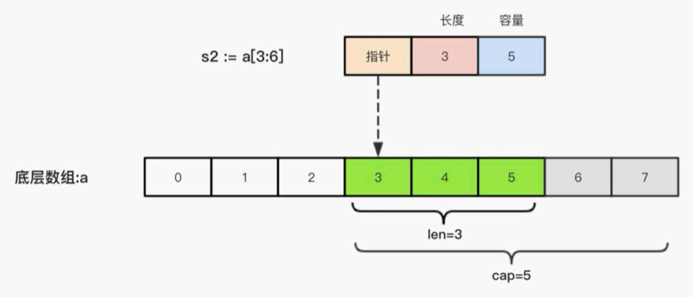

datetime:2020/10/23 10:48
author:nzb
Go的切片
1、为什么要使用切片
切片（Slice）是一个拥有相同类型元素的可变长度的序列。它是基于数组类型做的一层封装。 它非常灵活，支持自动扩容。
切片是一个引用类型，它的内部结构包含地址、长度和容量。
声明切片类型的基本语法如下：
var name [] T
其中：
- name：表示变量名
- T：表示切片中的元素类型
举例
// 声明切片，把长度去除就是切片
var slice = []int{1,2,3}
fmt.Println(slice)
2、关于nil的认识
当你声明了一个变量，但却还并没有赋值时，golang中会自动给你的变量赋值一个默认的零值。这是每种类型对应的零值。
- bool：false
- numbers：0
- string：""
- pointers：nil
- slices：nil
- maps：nil
- channels：nil
- functions：nil
nil表示空，也就是数组初始化的默认值就是nil
var slice2 [] int
fmt.Println(slice2 == nil)
运行结果
true
3、切片的遍历
切片的遍历和数组是一样的
var slice = []int{1,2,3}
for i := 0; i < len(slice); i++ {
fmt.Print(slice[i], " ")
}
4、基于数组定义切片
由于切片的底层就是一个数组，所以我们可以基于数组来定义切片
// 基于数组定义切片
a := [5]int {55,56,57,58,59}
// 获取数组所有值，返回的是一个切片
b := a[:]
// 从数组获取指定的切片
c := a[1:4]
// 获取 下标3之前的数据（不包括3）
d := a[:3]
// 获取下标3以后的数据（包括3）
e := a[3:]
运行结果
[55 56 57 58 59]
[55 56 57 58 59]
[56 57 58]
[55 56 57]
[58 59]
同理，我们不仅可以对数组进行切片，还可以切片在切片
5、切片的长度和容量
切片拥有自己的长度和容量，我们可以通过使用内置的len）函数求长度，使用内置的cap（） 函数求切片的容量。
切片的长度就是它所包含的元素个数。
切片的容量是从它的第一个元素开始数，到其底层数组元素末尾的个数。切片s的长度和容量可通过表达式len（s）和cap（s）来获取。
举例
// 长度和容量
s := []int {2,3,5,7,11,13}
fmt.Printf("长度%d 容量%d\n", len(s), cap(s))
ss := s[2:]
fmt.Printf("长度%d 容量%d\n", len(ss), cap(ss))
sss := s[2:4]
fmt.Printf("长度%d 容量%d\n", len(sss), cap(sss))
运行结果
长度6 容量6
长度4 容量4
长度2 容量4
为什么最后一个容量不一样呢，因为我们知道，经过切片后sss = [5, 7] 所以切片的长度为2，但是一因为容量是从2的位置一直到末尾，所以为4
6、切片的本质
切片的本质就是对底层数组的封装，它包含了三个信息
- 底层数组的指针
- 切片的长度(len)
- 切片的容量(cap)
举个例子，现在有一个数组 a := [8]int {0,1,2,3,4,5,6,7}，切片 s1 := a[:5]，相应示意图如下

切片 s2 := a[3:6]，相应示意图如下：

7、使用make函数构造切片
我们上面都是基于数组来创建切片的，如果需要动态的创建一个切片，我们就需要使用内置的make函数，格式如下：
make ([]T, size, cap)
其中：
- T：切片的元素类型
- size：切片中元素的数量
- cap：切片的容量
举例：
// make()函数创建切片
fmt.Println()
var slices = make([]int, 4, 8)
//[0 0 0 0]
fmt.Println(slices)
// 长度：4, 容量8
fmt.Printf("长度：%d, 容量%d", len(slices), cap(slices))
需要注意的是，golang中没办法通过下标来给切片扩容，如果需要扩容，需要用到append
slices2 := []int{1,2,3,4}
slices2 = append(slices2, 5)
fmt.Println(slices2)
// 输出结果 [1 2 3 4 5]
同时切片还可以将两个切片进行合并
// 合并切片
slices3 := []int{6,7,8}
slices2 = append(slices2, slices3...)
fmt.Println(slices2)
// 输出结果 [1 2 3 4 5 6 7 8]
需要注意的是，切片会有一个扩容操作，当元素存放不下的时候，会将原来的容量扩大两倍，详情
8、使用copy()函数复制切片
前面我们知道，切片就是引用数据类型
- 值类型：改变变量副本的时候，不会改变变量本身
- 引用类型：改变变量副本值的时候，会改变变量本身的值
如果我们需要改变切片的值，同时又不想影响到原来的切片，那么就需要用到copy函数
// 需要复制的切片
var slices4 = []int{1,2,3,4}
// 使用make函数创建一个切片
var slices5 = make([]int, len(slices4), len(slices4))
// 拷贝切片的值
copy(slices5, slices4)
// 修改切片
slices5[0] = 4
fmt.Println(slices4)
fmt.Println(slices5)
运行结果为
[1 2 3 4]
[4 2 3 4]
9、删除切片中的值
Go语言中并没有删除切片元素的专用方法，我们可以利用切片本身的特性来删除元素。代码如下
// 删除切片中的值
var slices6 = []int {0,1,2,3,4,5,6,7,8,9}
// 删除下标为1的值
slices6 = append(slices6[:1], slices6[2:]...)
fmt.Println(slices6)
运行结果
[0 2 3 4 5 6 7 8 9]
10、切片的排序算法以及sort包
编写一个简单的冒泡排序算法
func main() {
var numSlice = []int{9,8,7,6,5,4}
for i := 0; i < len(numSlice); i++ {
flag := false
for j := 0; j < len(numSlice) - i - 1; j++ {
if numSlice[j] > numSlice[j+1] {
var temp = numSlice[j+1]
numSlice[j+1] = numSlice[j]
numSlice[j] = temp
flag = true
}
}
if !flag {
break
}
}
fmt.Println(numSlice)
}
在来一个选择排序
// 编写选择排序
var numSlice2 = []int{9,8,7,6,5,4}
for i := 0; i < len(numSlice2); i++ {
for j := i + 1; j < len(numSlice2); j++ {
if numSlice2[i] > numSlice2[j] {
var temp = numSlice2[i]
numSlice2[i] = numSlice2[j]
numSlice2[j] = temp
}
}
}
fmt.Println(numSlice2)
对于int、float64 和 string数组或是切片的排序，go分别提供了sort.Ints()、sort.Float64s() 和 sort.Strings()函数，默认都是从小到大进行排序
var numSlice2 = []int{9,8,7,6,5,4}
sort.Ints(numSlice2)
fmt.Println(numSlice2)
降序排列
Golang的sort包可以使用 sort.Reverse(slic e) 来调换slice.Interface.Less，也就是比较函数，所以int、float64 和 string的逆序排序函数可以这样写
// 逆序排列
var numSlice4 = []int{9,8,4,5,1,7}
sort.Sort(sort.Reverse(sort.IntSlice(numSlice4)))
fmt.Println(numSlice4)